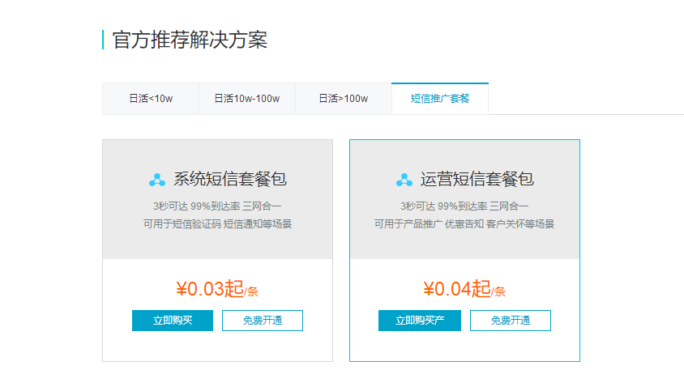
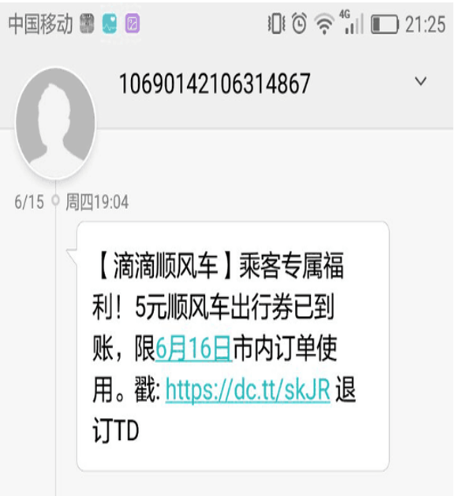
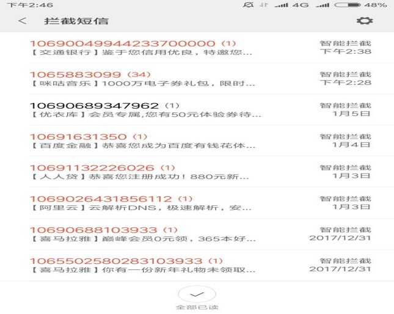
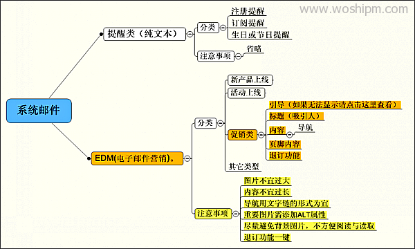
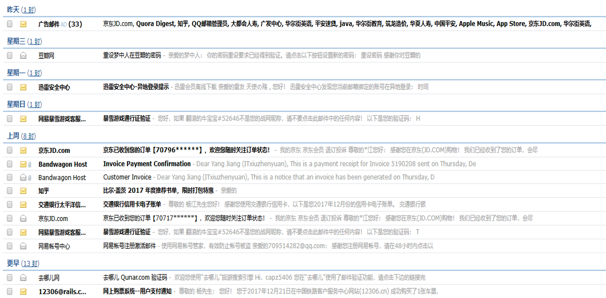
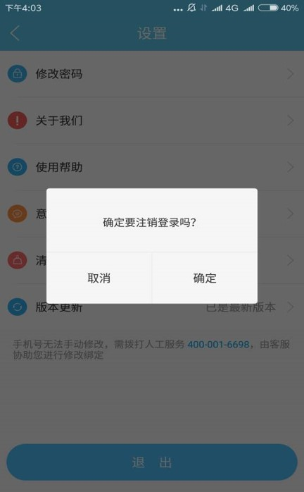
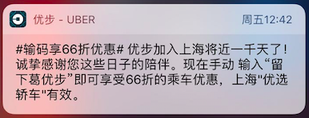
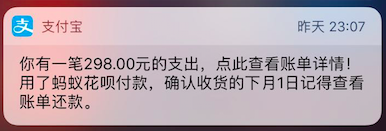
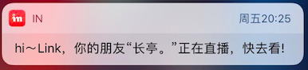

分享人：杨江
目录
一.背景介绍
二.消息分类
三.移动消息推送平台的构建
四.如何构建消息推送策略
五.参考文献
六.更多讨论
1.推送基础
移动互联网蓬勃发展的今天，大部分手机 APP 都提供了消息推送功能，如新闻客户端的热点新闻推荐，IM 工具的聊天消息提醒，电商产品促销信息，企业应用的通知和审批流程等等。推送对于提高产品活跃度、提高功能模块使用率、提升用户粘性、提升用户留存率起到了重要作用，作为 APP 运营中一个关键的渠道，对消息推送的合理运用能有效促进目标的实现。
推送最早诞生于 Email 中，用于提醒新的消息，而移动互联网时代则更多的运用在了移动客户端程序。
2.消息推送概念
消息推送（Push）指运营人员通过自己的产品或第三方工具对用户移动设备进行的主动消息推送。用户可以在移动设备锁定屏幕和通知栏看到push消息通知，通知栏点击可唤起APP并去往相应页面。我们平时在锁屏上看到的微信消息等等都属于APP消息推送行列。 推送（Push）是一种技术概念，是指从服务端实时发送信息到客户端。 大家概念中的典型推送服务是类似 APNS（Apple Push Notification Service）、GCM（Google Cloud Messaging） 等服务。在国内，由于谷歌服务不能使用，因此您的应用必须使用第三方或者自己研发的服务来推送。
3.推送的利弊
优点：
1.提高活跃度和用户粘性
APP消息推送可以直接唤醒APP，是获得用户特别关注，并打开APP激活使用的绝佳途径。运营人员身上背着日活，月活的KPI，APP消息推送也是大部分运营人员完成KPI的途径之一。
2.提高用户留存率
APP运营的竞争，在于抢夺用户关注时间，所以大部分不具高频次特性的工具类产品，用户用过则过。所以为了唤醒沉睡用户，挽留流失用户，APP消息推送也身兼一定的作用。
3.提高产品功能和营销活动的用户参与度
APP上有新的营销活动或者APP有新的功能发出，用户不一定感知到，现在APP功能做的越来越复杂，为了完成KPI，营销活动越来越多，用户主动发掘的欲望很低，好的功能一定要想办法让用户感知到，这是提升用户体验的非常好的途径。
缺点：
1.对用户形成打扰，招致卸载。提高活跃度的同时也能招致高卸载率。
2.用户对推送消息变得麻木。
3.产品丧失用户信任。用户下载使用代表着对APP的信任，透支这份信任必然用户会丧失好感。
4.相关指标
1.到达率
到达率=（用户接收 / 推送数量）*100%
2.点击率
点击率= （点击人数/ 用户接收数）＊100%
3.转化率
转化率=（目标行为人数 / 用户点击数）＊100%
4.投资回报率
ROI = （新增收入／投入费用）＊100%
1.短信推送
短信推送凭借着优秀的到达率，一度成为最受欢迎的营销工具之一。短信推送是通过正规短信供应商发送，发送率和抵达率高，短信内容需要提前报备，根据发送量不同价格不一样，越多越便宜。
短信协议:指的是手机所支持的短信息协议，也称为多媒体协议。目前主要有SMS短信、EMS短信和MMS彩信三种。
SMS（Short Messaging Service）即：短信服务。是最早的短消息业务，也是现在普及率最高的一种短消息业务，通过它移动电话之间可以互相收发短信，内容以文本、数字或二进制非文本数据为主，这种短消息的长度被限定在140字节之内。SMS以简单方便的使用功能受到广大用户的欢迎，迅速普及，但却始终是属于第一代的无线数据服务，在内容和应用方面存在技术标准的限制。
SMS短信结构：【签名】+（文案）+（短链）+退订
缺点：容易被拦截。
2.邮件推送
EDM邮件:EDM 是 Email Direct Marketing 的缩写，即电子邮件营销。企业可以通过EDM建立同目标顾客的沟通渠道，向其直接传达相关信息，用来促进销售。可以发送电子广告、产品信息、销售信息、市场调查、市场推广活动信息等。
 EDM的优点
1.精准直效：
可以精确筛选发送对象，将特定的推广信息投递到特定的目标社群。
2.个性化定制：
根据社群的差异，制定个性化内容，让企业根据用户的的需要提供最有价值的信息。
3.信息丰富，全面：
文本，图片，动画，音频，视频，超级链接都可以在EDM中体现。
4.具备追踪分析能力 ：
根据用户的行为，统计打开邮件， 点击数并加以分析，获取销售线索。
EDM注意事項
1.标题
务必吸引人。但是前提是要表述清楚内容同时不要过长。
2.页面内容：
因为使用图片无可避免，但是，重要的内容请务必使用文字，哪怕是使用了图片也务必给出文字标识！
3.图片的使用：
建议给每个图片一个固定的宽度和高度及Alt属性标识，同时，注意不要使用背景图片。
4.一致性：
如果你会定期发送EDM，请注意使用统一的风格，主要是页头和页尾的风格统一。如果，你是有期刊号的请将期刊号和时间也一并加入！
3.通知栏推送
通知栏推送，即指在手机的通知栏上会显示的一条通知信息。用户可以在移动设备锁定屏幕和通知栏看到push消息通知，通知栏点击可唤起APP并去往相应页面。可以有效激活用户，提升用户活跃。
4.应用内推送
应用内推送主要是弹窗。弹窗的样式可以设置成多种多样。
移动推送的三种实现方式
1.轮询方式（PULL）
客户端和服务器定期的建立连接，通过消息队列等方式来查询是否有新的消息，需要控制连接和查询的频率，频率不能过慢或过快，过慢会导致部分消息更新不及时，过快会消耗更多的资源（流量、电量等），对用户体验有较大伤害。
2.短信推送方式（SMS PUSH）
通过短信发送推送消息，并在客户端植入短信拦截模块（主要针对 Android 平台），可以实现对短信进行拦截并提取其中的内容转发给 App 应用处理，这个方案借助于运营商的短消息，能够保证最好的实时性和到达率，但此方案对于成本要求较高，开发者需要为每一条 SMS 支付费用。
3.长连接方式（PUSH）
移动 Push 推送基于 TCP 长连接实现， 客户端主动和服务器建立 TCP 长连接之后, 客户端定期向服务器发送心跳包用于保持连接, 有消息的时候, 服务器直接通过这个已经建立好的 TCP 连接通知客户端。尽管长连接也会造成一定的开销，对于轮询和 SMS 方案的硬伤来说，目前已经是最优的方式，而且通过良好的设计，可以将损耗降至最低。不过，随着客户端数量和消息并发量的上升，对于消息服务器的性能和稳定性要求提出了非常大的考验。因此，就难度而言，此方式代价最高。
推送解决方案
基于 TCP 长连接的方式是主流的推送方式，基于该推送方式逐步发展出系统级、应用级一系列的推送解决方案。
系统级方案
1.iOS 平台（APNs）
iOS 在系统层面与苹果 APNs（Apple Push Notification service）服务器建立连接，应用通过观察者模式向 ioS 系统注册关注的消息，系统收到 APNs Server 消息后转发到相应的应用程序，整个过程很清晰，并且所有 APP 都共用同一个系统级的连接，减少了系统开销，虽然 APNs 能无障碍的访问，但实际使用过程中，发现延时和丢消息的情况偶有发生。
2. Android 平台（C2DM）
Android 的 C2DM（Android Cloud to Device Messaging）采取与 iOS 类似的机制，都是由系统层面来支持消息推送，但是由于 Google 的服务在国内不能稳定的访问，此方案对于中国用户来说基本是无法使用的。 除了 Google 官方提供的方案，中国众多的手机厂商在其定制的系统中也内置了推送功能，如小米、华为等。
应用级方案
1.第三方推送服务
鉴于 Android 平台 C2DM 推送的不可用性，国内涌现出大量的第三方推送服务提供商.目前应用最为广泛的第三方推送服务提供商包括个推、极光、友盟、小米、华为、BAT 等，绝大部分 APP 都会优先考虑采用第三方推送服务。
2.自建推送服务
第三方服务在开发成本和消息到达率上表现都不错，但所有信息会经过第三方服务器，对于信息敏感类 APP 而言，有必要考虑自建一套消息推送服务，能最大化保证安全，但对于自建推送服务，如果从零开始来做需要解决几个难点： 第一，移动推送服务器对 App 客户端海量长连接的维护管理。第二，App 客户端如何保证 Push Service 常驻，对于 Android 我们可以通过发现 push service 不存在可以定时拉起的方式。第三，通信协议的制定，我们可以采用开源的 XMPP 方式实现，也可以自定义协议，不管哪种方式我们都要保证消息传送的到达率的准确性。第四，在移动互联网网络环境下，经常出现弱网环境，特别是 2G、3G 等网络不稳定的情况下，如果保证消息在弱网环境下不重、不丢也是一个挑战。
1、明确消息通知的类型
产品价值是用户为何活跃于产品的原因，而消息通知则是产品核心价值的延伸。消息通知从形态来分划分，可以归纳成营销型，功能型和内容型三类。使用哪一种取决于要传递的是产品哪一方面的价值以及每种方式的限制。
营销型
通常发送给全量的用户，电商类APP例如淘宝、京东使用较为频繁，给用户发送活动大促，限时抢购，优惠红包等信息通知。
优势：能够覆盖所有用户；研发成本低，可以直接接入第三方推送API
劣势：内容没有个性化，导致点击率较低；频繁发送易形成打扰，而且部分用户对于该类内容忍耐度低，必须谨慎使用，避免用户卸载或投诉
功能型
基于用户自身在APP上的行为触发消息推送，通知用户一些事务型的消息，例如闪惠买单成功，红包领取到账等等。
优势：内容与用户强联系，个性化，交互度较高；用户理解消息触发的原因，对于消息通知的容忍度较高。
劣势：覆盖人群较窄，用户需要与产品有足够多的交互或者与足够多的其他用户连接，才能有消息通知的触发，无法触达一些低频乃至新用户。
内容型
将用户感兴趣或可能喜欢的内容进行连接，一般基于用户的浏览，收藏，点赞，关注等行为，进行个性化的内容推荐。
优势：通过高度定制化与用户相关内容获得较高的交互度，仅此于功能型的点击率；没有足够信息进行个性化推荐的情况下，可以通过推送热门内容覆盖较多用户。
劣势：用户如果与产品交互少，导致产品获取信息少或者内容不够精准，带来的交互度也会较低。从技术实现来看，实现推荐算法的成本较高。
2.明确用户类型
明确了推送的意义，该推送什么内容，接下来需要明确推送给谁,不是所有的消息推送对于所有的用户都是有价值的.消息要基于人群的共性进行划分，在进行有针对性的推送。不可取的反例就是给男生推送美甲优惠信息，给尚未结婚的大学生推送亲子促销信息，以上内容的推送极易造成用户的反感。
从生命周期维度细讲。APP的用户可简单的分为新用户、低频用户、活跃用户。
新用户，推送能够强化产品价值的消息，帮助用户了解产品的功能特性，明确怎样从产品中获得更多的价值，来提高自身的效率。
活跃用户，对产品有较深的理解，用户的画像较为精准，可以推送更多个性化的内容，让他们与产品有更多交互。
低频用户，对产品可能不太认可，用户的画像也不够精确。为了让他们与产品产生更多的交互，应降低推送的频率，推送较为普适的内容或真正力度较大的促销活动较为有效。
3.提升消息通知精准性
推送的时间
从用户使用场景出发，选择合适的推送时间。不要在晚上10点以后发送消息通知，影响用户休息等对用户形成打扰都是不友好的行为。
比如天气类APP，通常用户会在早上出门前想知道一整天的天气情况、温度变化，因此天气类APP最好的推送时机就是早上8-9点。
比如外卖类APP，暴雨或酷热等恶劣天气，用户往往不愿意出门就餐，推送一些高温红包补贴等通知会较为有效。
用户的位置
iOS和Android对于位置信息都有很好的支持，根据用户的GPS位置信息可以进行推送个性化的内容推送。
比如异地的场景，当感知到用户到达了陌生的城市，可以给用户推送当地的美食排行、酒店攻略以及旅游门票类信息。
比如常居地的场景，可以给用户推送周边新开的热门美食店、玩乐场景，帮助用户探索新的消费场所。当用户到达商场综合体，可以推送商场内的最新活动讯息。
手机的型号
针对Android和iOS手机不同的特性和面向人群进行针对性的推送。Android各厂商对消息通知的支持能力也不同，从实际的数据反馈，小米和华为的Push消息通道相比，小米的消息通知的触达率会高很多。
iOS10对于消息推送推送进行了全新的升级，可以发送图片、音频、视频等内容，用户还可以对消息通知进行喜欢、退订等自定义按钮的交互。
参考1：消息推送常见问题索引
感谢大家观看
BY : 杨江